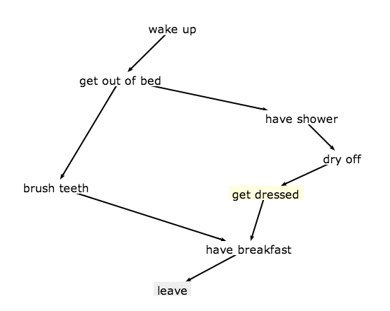
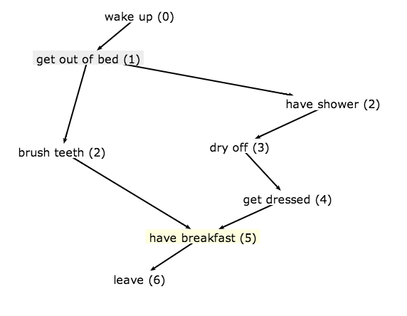
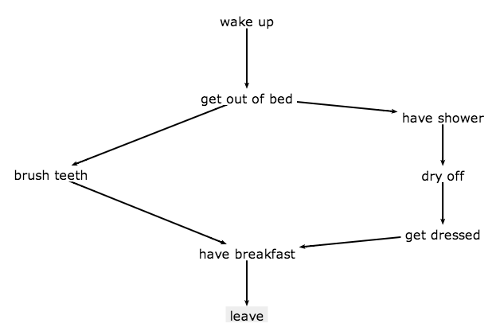

Flowcharts:
can a computer make them pretty?
Flowcharts, visual instructions, recipe diagrams, …
- directed graph
- potentially cyclic
- single start-node, single end-node
What does pretty mean?
- minimise crossing edges
- even spacing between peers
- one axis is progress towards goal (except for cycles)
What does pretty mean?
Minimise crossing edges
What does pretty mean?
Even spacing between peers
What does pretty mean?
One axis is progress towards goal
Going to talk about:
- the "algorithm"
- an interesting graph algorithm
- pleasant JavaScript surprise
The algorithm
a.k.a. an ordered collection of special cases
- make it work ✔ / ×
- make it good ×
- make it fast ×
Initial sanity checking
- refuse to accept cyclical graphs, because hard
- require one start node; one end node
- no orphaned nodes
For example...

Work out distance from root

Work out initial top offset
- nodes are in ranks by distance
- space ranks evenly top to bottom
Work out initial left offset
- imagine virtual row spanning nodes of the same rank
- divide row evenly between these nodes
- a few fiddly special cases
Let Springy do the rest

Finding cycles in a graph
An interesting algorithm
Tarjan's strongly connected components algorithm

- depth-first search
- mark nodes with increasing index as you go
- pop nodes onto stack as you go
- if you get to a node that's in the stack…
- ...you've found a strongly-connected component
- pop the stack until empty: it is a SCC
Finding cycles
- a cycle is a SCC with >1 nodes in it
- if there are <N SCCs in a graph, there is a cycle
A pleasant JavaScript surprise
The problem
- want to invoke "super-class" constructor
- maybe expecting different arguments
- maybe the "child" wants to do more in its constructor
- was expecting to need to name the "super-class" and invoke with
apply
The surprise
this.constructorin "child" constructor- careful not to do
Child.prototype = Parent.prototype;
var Parent = function (food, drink) {
this.food = food;
this.drink = drink;
};
Parent.prototype.getDinner = function () {
return [this.food, this.drink];
};
var Child = function (food, drink, tv) {
this.tv = tv;
this.constructor(food, drink);
};
Child.prototype = new Parent;
Child.prototype.getDinner = function () {
// still no nice way to do super.getDinner()
return [this.food, this.drink, this.tv];
};
var p = new Parent("caviar", "whiskey");
var c = new Child("pizza", "pop", "A-Team");
console.info(p.getDinner());
console.info(c.getDinner());